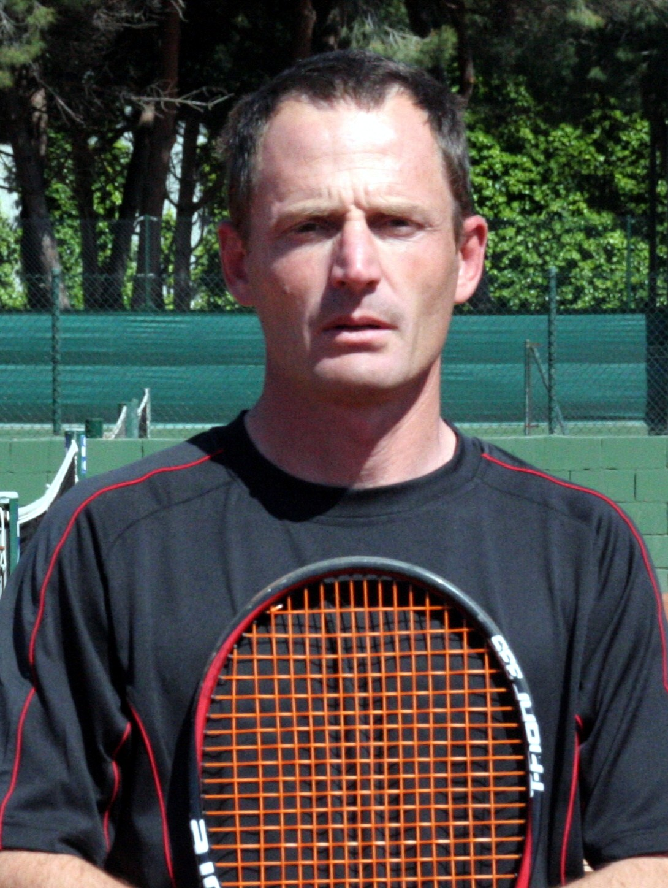
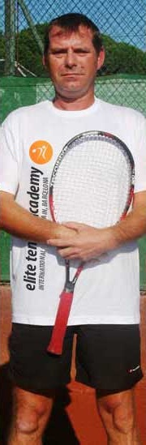
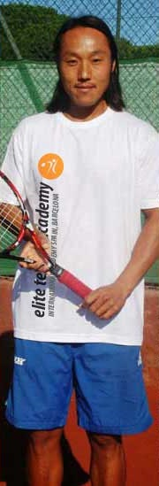
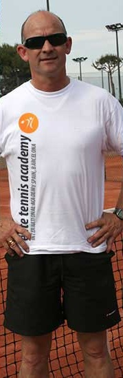
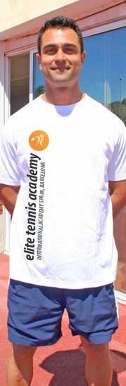

Международная тренерская команда с одной общей целью
Система тренировок в Elite Tennis Academy – уникальна. Уникальность нашей команды заключается в профессионализме и отношении специалистов к тренировочному процессу. Одно из главных его преимуществ- это умение тренеров общаться с игроками и принимать во внимание индивидуальные особенности каждого из них. Ведь в процессе обучения игрок сам начинает осознавать причины своих ошибок. Elite Tennis Academy предлагает свои услуги целеустремленным спортсменам и помогает раскрыть им свой потенциал. Мы понимаем все сложности спортивной подготовки за рубежом и поэтому стараемся создать дружескую атмосферу для каждого человека. Если Вы когда-нибудь побываете в нашей академии, то скорее всего в скором времени Вы снова захотите вернуться к нам. Наша статистика показывает, что 85% наших клиентов возвращались к нам 2 или более раз.
Энрике Гулдберг (Аргентина)
- Двадцатилетний опыт международной тренерской работы
- Окончил 27 различных курсов повышения квалификации в теннисе, фитнессе, спортивной психологии
- Проводит собственные курсы повышения квалификации тренеров в Англии, Аргентине, Индии и т.д.
Лучшие воспитанники:
- Марко Трунгелитти № 177 АТР в одиночном разряде, № 176 АТР в парном разряде, № 1 в Аргентине до 16 лет.
- Бахия Моухтассин № 139 WTA в одиночном разряде, игрок женской национальной сборной Марокко
- Рената Бакиева № 567 WTA в одиночном разряде, № 646 в парном разряде, № 108 в мире до 18 лет
- Шармада Балу № 674 WTA в одиночном разряде, № 599 WTA в парном разряде, № 4 в Индии
- Кирсти Вули № 724 WTA
- Хуан Баэс № 1 в Аргентине до 18 лет
- Дмитрий Бородкин № 1 в Казахстане до 18 лет (2009-2010 год), № 454 в мире до 18 лет
- Маттиас Оддон № 1 в Аргентине до 12, 14, и 16 лет
- Гильермо Эйбен № 4 в Аргентине до 16 лет
Джон Кинг (Великобритания)
- - Пятнадцатилетний опыт международной тренерской работы
- - Великолепные достижения в работе с детьми от 4 до 13 лет
- - Сын чемпиона юношеского Уимблдона
Джон Чун (Испания)
- - Двадцатилетний опыт международной тренерской работы
- - Долгие годы своей жизни Джон путешествовал по миру, участвуя в профессиональных турнирах ATP тура
- - Джон является воспитанником Андреса Химено (чемпион Роланд Гаррос 1972, финалист открытого чемпионата Австралии 1969, полуфиналист Уимблдона 1970, 4я ракетка мира 1964 года) и Барри Филлипса (7я ракетка Австралии)
Америко Барилес (Аргентина)
- - Тренер по ОФП с опытом работы в профессиональных теннисных, футбольных, баскетбольных и хоккейных командах
- - Личный тренер Хавьера Оттовиани (1998-2002), Мартин Верчеси (1999-2001), Лоренсо Джустино (1999-2002)
Хуан Карлос Сивантос (Испания)
- - Тренер по ОФП
- - Пятнадцатилетний опыт работы
- - Обладатель черного пояса по кик-боксингу и карате